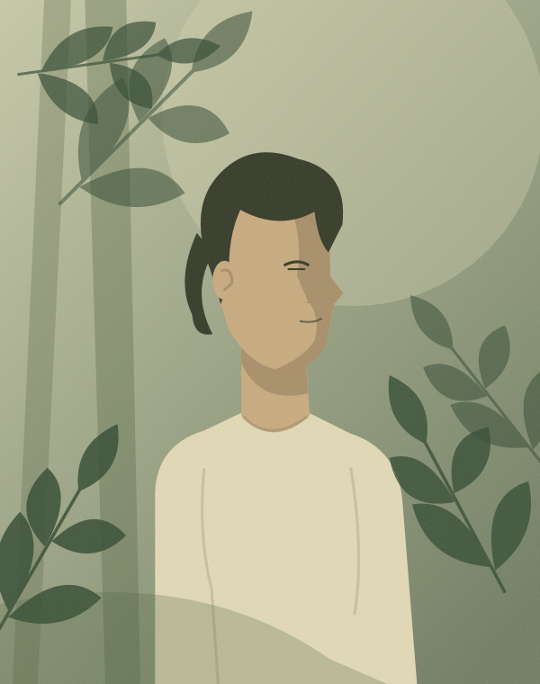
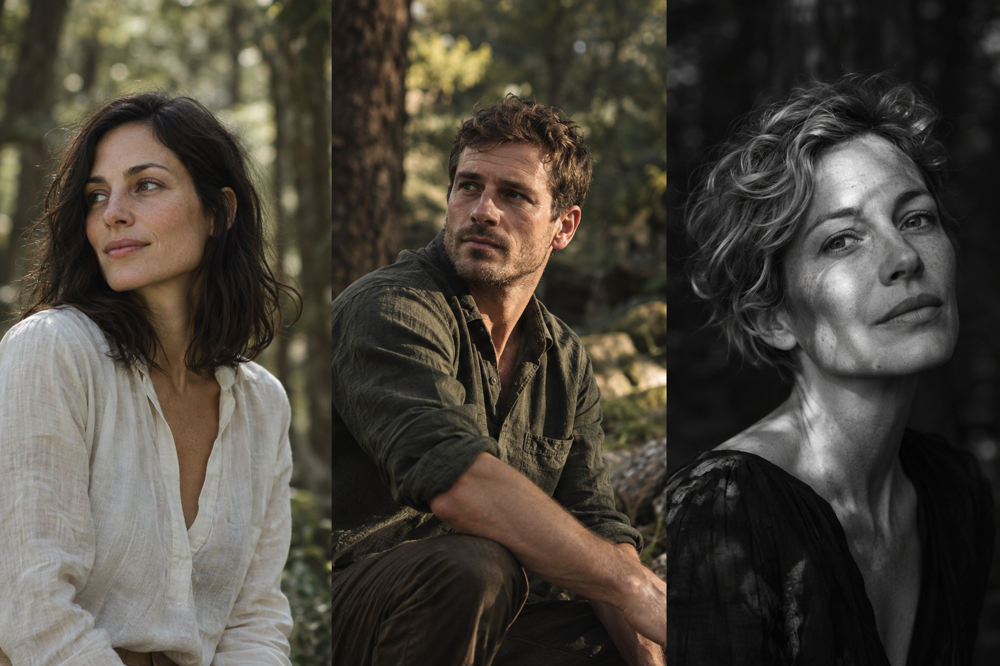
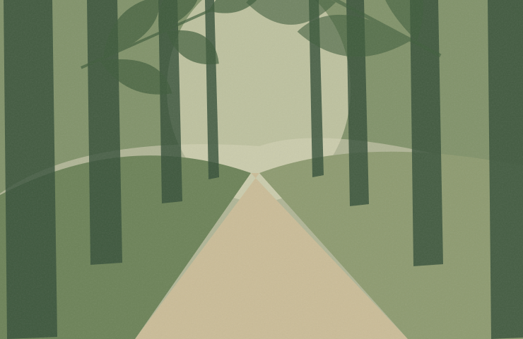

SEGNAPOSTO ILLUSTRATO
PORTFOLIO PRIVATO · IN ESPLORAZIONE
Il prossimo
NAPOLI, VOLTI E LUCE NATURALE
Il prossimo
ritratto
inizia qui.
Sono Fabio. Sto iniziando a esplorare la fotografia di ritratto. Cerco persone con cui dare forma a nuove immagini, un incontro alla volta.
I miei lavori attuali su @fmarano_photos ↗

ESEMPIO SINTETICO · AI01 / SELEZIONE VISIVA
Immagini da immaginare.
Sei direzioni da esplorare insieme. Ritratti sintetici generati con AI e illustrazioni segnaposto: riferimenti di atmosfera, non miei lavori fotografici.
02 / COLLABORAZIONI TF
Tu porti
te stesso.
Io, la curiosità.
Vorrei costruire le prime esperienze di ritratto a Napoli insieme a persone interessate a mettersi in gioco davanti all'obiettivo.
Immaginiamo un incontroTIME FOR PRINT / TIME FOR PHOTOS
Uno scambio creativo.
TF significa collaborare senza compenso tra fotografo e persona ritratta: tempo e partecipazione in cambio di una selezione di fotografie, secondo gli accordi presi insieme.
- 01
Ci conosciamo
Parliamo dell'idea, dello stile e di come ti senti davanti alla fotocamera. Anche una prima esperienza va bene.
- 02
Definiamo lo shooting
Luogo, data, durata, abbigliamento e possibili spese si concordano prima dell'incontro.
- 03
Concordiamo consegna e utilizzi
Numero di foto, tempi di consegna, crediti e permessi di pubblicazione vanno definiti insieme. Nessuna pubblicazione automatica.
Questa pagina presenta una proposta iniziale: non è un contratto né una prenotazione.
03 / SCEGLI UNA DIREZIONE
Come vuoi raccontarti?
Scegli lo stile che senti più vicino. Puoi cambiarlo in ogni momento: la scheda di Capodimonte seguirà la tua scelta.
La preferenza resta in questo browser. Puoi cancellarla dalla scheda.
04 / IL PRIMO INCONTRO
Un ritratto,
nel verde di Napoli.
Una proposta di shooting TF all'aperto nel Bosco di Capodimonte. Il tuo stile è il punto di partenza, i dettagli li scegliamo insieme.

LUOGO / ILLUSTRAZIONE SEGNAPOSTOall'aperto.NAPOLI · PROPOSTA TFDa concordare
Bosco di
Capodimonte
Verde, percorsi e luce da cercare sul posto. Un contesto per iniziare con calma e lasciare spazio alla persona.
- Stile scelto
- Naturale
- Data e orario
- Da concordare
- Punto d'incontro
- Da definire insieme
- Durata e fotografie
- Da concordare
Accesso, eventuali permessi, orari e meteo da verificare prima della sessione. Se piove, si concorda una nuova data.
LA TUA PROPOSTA, IN POCHI PASSI
Cominciamo da un'idea.
Prepara un messaggio da copiare e usare nella conversazione su Instagram.
Salvataggio facoltativo. Nessun dato viene inviato.
Nessuna prenotazione automatica.
Ci vediamo
davanti all'obiettivo.
@fmarano_photos Il mio lavoro attuale è su Instagram.
Questo spazio è l'inizio di una nuova esplorazione.